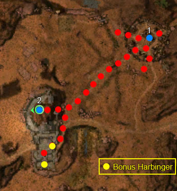

Elite: Spell Breaker
M12b
Nundu Bay
◉ Mission Map

Click to enlarge · Local cache · Wiki
Summary (click to expand)
Melonni has been having nightmares that her home village of Ronjok is under threat from Abaddon 's forces. You return with Melonni to Ronjok to help her cleanse the demons from her dreams. The mission is to defend the village against Margonites and Harbingers of Twilight and once done go on to defeat the Harbinger of Nightfall .
Region: Vabbi · Mission: 12b of 20 · Type: Cooperative
Required hero: Melonni
Path: Ronjok path
✓ Objectives
Defeat the Harbingers of Nightfall before they can destroy the village of Ronjok.
- The Harbingers of Nightfall can only be damaged once they are affected by the purified water of the vials.
- Protect and defend Elder Jonah. He must survive.
- *Bonus* Defeat the additional Harbingers.
- You have defeated [0...2] of 2 additional Harbingers.
→ Walkthrough
You start in the village (point 1 on the map); after some dialogue you will be told that the only way in which the Harbingers may take any damage is by using the skill Vial of Purified Water on them. Talk to Elder Jonah to receive this skill, a hex spell which at least one player character needs to equip (heroes cannot equip the skill). Taking the Vial of Purified Water is the trigger for additional Margonite forces to spawn and begin attacking the village. Consider waiting to take the skill from him until you kill some of the Margonite groups around the village along the bone crag path, up to the location where the Harbinger of Nightfall will spawn, as doing this will make the fight to defend the village easier.
Several waves of Margonites, starting with groups of two and increasing to groups of six, will approach the village, attacking through alternating entrances. The last group of the first wave will be led by the Monk boss Priest Zein Zuu. When he has been defeated, a Harbinger of Twilight will spawn. From close range, use the Vial of Purified Water against it to ensure you're doing damage and dispatch it. After that, a group led by Elementalist boss Scribe Wensal will spawn, followed by a group led by Paragon boss Commander Chutal. Another Harbinger of Twilight will spawn next, and finally a group led by Zealot Sheoli. Once she is defeated you are free to travel out of the village to the old Kournan fort, as there are no more groups which might come and kill Elder Jonah.
Kill the groups of Margonites up to the Harbinger of Nightfall (point 2 on the map). The Harbinger does not share aggro with the groups around it, so pulling is a good tactic. Try killing everything around the Harbinger before directing attention to the Harbinger itself. As the Harbinger of Nightfall becomes weaker, he will summon two additional groups of Margonites, once at 50% health and another at 25% health. The summoned Margonites will take some time to arrive so it may be a good strategy to retreat and engage the newly summoned foes before returning to the Harbinger, although he can be defeated before the arrival of the additional Margonites. Destroy the Harbinger of Nightfall the same way you killed the Harbingers of Twilight to complete the mission.
★ Bonus
The bonus is to kill additional two Harbingers of Twilight and their associated Margonite mobs. These are located inside the Kournan fort surrounded by Margonites to the south of where the Harbinger of Nightfall spawns. You will need the Vial of Purified Water to defeat these, so you must complete the siege on the village first. The first Harbinger is at the entrance to the fort area, while the second is located further into the fort; they can be killed like the other Harbingers using the Vial of Purified Water. When fighting near or in the fort, take note of your party's position, especially heroes and henchmen, and ensure that the walls of the fort are not obstructing your attacks. It is recommended to pull the mobs into more level or open spaces before engaging them.
Unlike the Harbinger of Nightfall, the bonus Harbingers of Twilight cannot be pulled away from the Margonite mobs accompanying them.
Backtrack to head north once both have been dispatched to kill the Harbinger of Nightfall to complete the mission.
◆ Hard Mode
No dedicated Hard Mode section on the wiki — expect tougher foes and adjusted mechanics. See walkthrough notes.
☠ Bosses & Elites
✦ Tips & Notes
Skill recommendations
- At least one party member needs to equip the Vial of Purified Water. Ideally, have two members do so, since its recharge time of 15 seconds exceeds its 10 second duration. In single-player teams, you could use Arcane Echo and/or Echo to duplicate Vial of Purified Water, but it is not essential.
- There are plenty of corpses around Elder Jonah at the beginning of the mission; bringing a minion master (or even two) also helps prevent Margonite Warlocks from using those corpses to create Wells of Silence.
- Bring skills to interrupt the Wave of Torment spell that is cast by both types of Harbingers. Distracting Shot is particularly effective, since it disables the skill for 20 additional seconds.
- All the foes in this mission are affected by Lightbringer skills. Lightbringer's Gaze can be used to interrupt Wave of Torment.
Notes
- The area behind the village, near where the entrance to the Sunspear Sanctuary would normally be, still keeps the normal, non Nightfallen terrain.
- Due to the number and frequency of boss appearances, Scroll of Hunter's Insight may last longer than other types.
- The Harbinger of Nightfall is not spawned at the beginning of the mission, so it is therefore impossible to rush up the middle path and kill him from the start. It is, however, possible to kill the two additional Harbingers at the beginning by splitting up a strong party.
- After completing this mission, your party will be teleported to Sunspear Sanctuary.
- Completion of this mission will fill in page #12 in the Night Falls storybook.